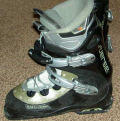
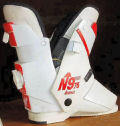
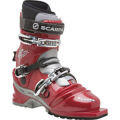

Welke soorten skischoenen zijn er?
Je hoort vaak zeggen: "Ik weet niet wat ik moet kiezen. Er zijn zoveel soorten skischoenen…". Maar is dat zo?
Als je een willekeurige skiwinkel binnen stapt kun je inderdaad overdonderd raken door een tsunami aan skischoenen. Natuurlijk: elk merk heeft verschillende soorten die zijn aangepast naar skiniveau: soepel voor beginners en stugger naarmate u een betere skiër bent. Of naar portemonnee: eenvoudige schoenen tot (race)skischoenen met verschillende instelmogelijkheden.
Zijn er zoveel soorten soorten?

Zo is de skischoen met achterinstap (zie foto, rechts) uit de jaren tachtig naar het museum verhuisd. (Hoewel, de achterinstap skischoen is terug van weggeweest.
)De zogenaamde 'revolutionaire' softboot-skischoen, Salomon Verse (zie foto, links), heeft het ook niet gehaald. Het klonk goed maar soft betekent in dit geval ook te veel flex en teveel speling in de schoenen hetgeen kramp opleverde.
Skischoen categorieën
Natuurlijk zijn er wel categorieën skischoenen zoals de langlaufschoen. Ok, dat is een beetje flauw. Een echte categorie is natuurlijk de Telemark skischoen met zijn

specifieke flexibele teenstuk. (zie foto)Dan zijn er de tourskischoenen en -een trend van de laatste jaren- de gecombineerde Telemark- en tourskischoenen.
Een andere categorie die ik hier wil noemen is de freestyle en freeride skischoenen. Deze schoenen hebben bijvoorbeeld een verend 'bootboard' (binnenzool) en een speciale tong die schokken absorbeert. Elk categorie zijn eigen merk: zo zijn Full Tilt en Dalbello bekende namen in de freeride/freestyle wereld.